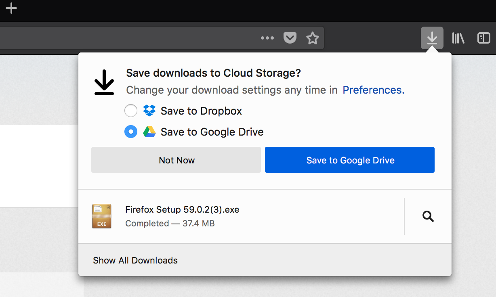
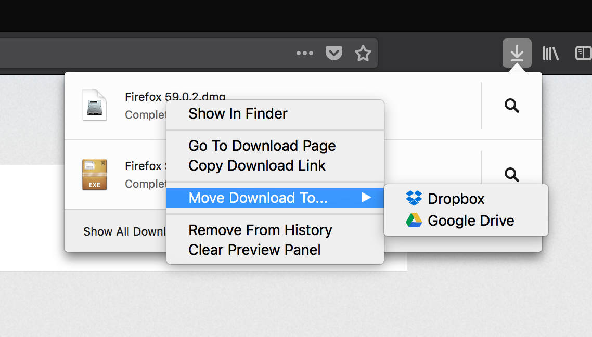

<!DOCTYPE html>
<html>
<head>
<meta charset="UTF-8">
<title>Cloud Storage v2 Report - iodide</title>
<link rel="stylesheet" type="text/css" href="./resources/iodide.stable.css">
</head>
<body>
<script id="jsmd" type="text/jsmd">
%% meta
{
  "title": "Cloud Storage v2 Report",
  "viewMode": "presentation",
  "lastSaved": "2018-10-03T04:39:44.949Z",
  "languages": {
    "js": {
      "pluginType": "language",
      "languageId": "js",
      "displayName": "Javascript",
      "codeMirrorMode": "javascript",
      "module": "window",
      "evaluator": "eval",
      "keybinding": "j",
      "url": ""
    },
    "py": {
      "languageId": "py",
      "displayName": "python",
      "codeMirrorMode": "python",
      "keybinding": "p",
      "url": "https://iodide-project.github.io/pyodide-demo/pyodide.js",
      "module": "pyodide",
      "evaluator": "runPython",
      "pluginType": "language"
    }
  },
  "lastExport": "2018-10-03T04:39:50.714Z"
}

%% md
# Cloud Storage v2 Report
Author: Teon L Brooks <<teon@mozilla.com>>
<br>
Date: October 30, 2018

%% resource
https://cdnjs.cloudflare.com/ajax/libs/d3/4.10.2/d3.js
https://raw.githubusercontent.com/hamilton/ply.js/master/dist/ply.js
https://cdnjs.cloudflare.com/ajax/libs/Chart.js/2.7.2/Chart.min.js

%% js
function myFunction() {
     var x = document.getElementById("cloudstorage_v1");
     if (x.style.display === "none") {
         x.style.display = "block";
     } else {
         x.style.display = "none";
     }
}

%% md
Previous Study: Cloud Storage v1
--------------------------------

<button onclick="myFunction()">Toggle Overview</button>
<div id="cloudstorage_v1" style='display: none'>

  ### Supporting Assets
  - [Bug report](https://bugzilla.mozilla.org/show_bug.cgi?id=1399231)
  - [PHD](https://docs.google.com/document/d/1FVJKBC6_x49byinLIKNk8-MBinSejmjRfMyHAdiAGRM/edit)
  - [v1 Dashboard](https://sql.telemetry.mozilla.org/dashboard/cloudstorage-test-dashboard)
  - [Survey Report](https://data.surveygizmo.com/r/28049_5a09d066560650.45923428)

  ### [Report](https://docs.google.com/document/d/192Mzw-TP2rAW9W_CXaZBR-HE-9wJnsMXFqBwAdIow9o/edit)

  High-level takeaways:
  ---------------------
  - 12-14% of enrolled users engaged and used cloud storage feature

  - 1.2-1.5% of users permanently opted-in to always save their downloads to cloud storage provider folder

  - In post study survey, 60% of users who saw this feature responded with ‘Yes’ when asked if they would like to use this feature

  - Want to access your downloads on mobile device has > 60% with ‘often, sometimes and rarely’ as response, hinting sync downloads to mobile as desired feature

</div>

%% md
Current Study: Cloud Storage v2
-------------------------------

### Supporting Assets
 - [Bug report](https://bugzilla.mozilla.org/show_bug.cgi?id=1450016)
 - [Instrumentation](https://docs.google.com/document/d/17Mmo48BDpd4uBIpA82B0D6LUSMXwvKczS_2I4yI8JaU/edit)
 - [PHD](https://docs.google.com/document/d/1-OD9O0lIrni0TJLPibu-xU8-Ov3h4eLY7rfiNYcIzOA/edit?usp=sharing)
 - [v2 Dashboard](https://sql.telemetry.mozilla.org/dashboard/cloudstorage_v2-dashboard)
 - [Survey Report](https://data.surveygizmo.com/r/28049_5b4f7b67a64237.65030312)
 - [Analysis Notebook](https://dbc-caf9527b-e073.cloud.databricks.com/#notebook/27874)

%% md
## Motivation

The goal of the Cloud Storage experiment is to evaluate whether there is a market fit for integrating the Firefox download feature with one of the existing cloud storage providers (e.g. Dropbox, Google Drive). By offering linking behavior for Firefox Users to sync with their cloud provider, it may open up business offering for partnerships with the providers.

This second version iterated on the first WebExtension with aims of cleaning up the UI to make it less interruptive and to see if there is a demand for the feature.

There were two key features available from the WebExtension:

1) change default download location to cloud storage provider
<br>


2) move download to cloud storage provider
<br>


%% md
## Methods
This Cloud Storage WebExtension was delivered to 1% of en-us Firefox Users using the Shield platform. We selected participants for analysis who met the following criteria:
1. The user had a cloud storage provider installed (Google Drive or Dropbox)
2. The user dowloaded a file during the study period

The participants were preassigned to either the control branch where the add-on was not activated or the experimental branch where the add-on was activated.

This study faced a few peculiar challenges that set it apart from traditional SHIELD studies, in particular, the feature designed to change default download location was explicitly opt-in. SHIELD studies are typically opt-out so that we can have a sizeable population for comparison that is unbiased in selection.

Because of this multi-step requirement funnel, we ultimately ended up with a study that was fewer participants than anticipated, that is, we only had 1.3% of the expected sample from potential participants across experiment branches. Given the small sample size across the experiment branches, we did not look at difference between the two experiment conditions (short- and long-interval notification) and we collapsed these two conditions to a single group.
We randomly subsampled this control group to match the number of participants in our experiment group.

%% md
### Terminology
Given that SHIELD studies are inherently opt-out, we would like to clarify terms used below to describe the Cloud Storage experiment. For this study, we used the following terms for our analysis:

- Cloud Storage Provider (cs_provider): describes how many cloud storage providers (Google Drive, Dropbox) are currently installed on a user machine.
- Opted-in (init_opted_in): describes those who opted into having their default download location be their cloud storage provider of choice when prompted by the add-on. These participants had at least one cloud storage provider installed and made at least one download during the study period.
- Opted-out (opted_out): describes those who chose to move back to their default location instead of the cloud storage provider during the study period.

%% md
### Survey Results

%% js
iodide.evalQueue.requireExplicitContinuation()
let URL = './data/cloud_storage_v2-survey_cleaned.csv'
var rawData
fetch(URL)
  .then(d=>d.text())
  .then(d=>d3.csvParse(d))
  .then(d=> {rawData = d})
  .then(()=> {iodide.evalQueue.continue(); return 'finished with data download.'})

%% js
var participants = rawData.length
rawData.slice(0, 5)

%% md
### [PHD](https://docs.google.com/document/d/1-OD9O0lIrni0TJLPibu-xU8-Ov3h4eLY7rfiNYcIzOA/edit?disco=AAAAB2QCRLo&ts=5ad518e9)

What is the **main effect** you are looking for and what data will you use to make these decisions?

Product Objective:
User should find downloading files directly to cloud convenient and should continue using it.
With a less interruptive interface, user should opt-in to use cloud storage after understanding the messaging in notification.
This study will attempt to find out if this feature interests to enough people to keep pursuing it.

%% md
### Survey Data
First, we need to do some filtering of the data. The first survey question asked if they noticed the prompt for Cloud Storage.
In the control condition, there should be no participant who has seen this popup. If their response is Yes, we should exclude them from any
subsequent questions.

<div class="response" align="center">
  <canvas class="subplot" id="controlPrompted"></canvas>
  <canvas class="subplot" id="shortPrompted"></canvas>
  <canvas class="subplot" id="longerPrompted"></canvas>
</div>

%% md
Here is a look at the types of Cloud Storage providers our users have.

<div align="center">
  <canvas id="allProviders"></canvas>
</div>

%% css
.response {
  display:flex;
}

.subplot {
  width: 150;
  height: 150;
}

%% js
var custom_tooltips = {
  callbacks: {
    label: function(tooltipItem, data) {
      //get the concerned dataset
      var dataset = data.datasets[tooltipItem.datasetIndex];
      //calculate the total of this data set
      var total = dataset.data.reduce(function(previousValue, currentValue, currentIndex, array) {
        return previousValue + currentValue;
      });
      //get the current items value
      var label  = data.labels[tooltipItem.index]
      var currentValue = dataset.data[tooltipItem.index];
      //calculate the precentage based on the total and current item, also this does a rough rounding to give a whole number
      var percentage = Math.floor(((currentValue/total) * 100)+0.5);

      return `${label}: ${currentValue} (${percentage}%)`;
    }
  }
}

%% js
var sortIt = (a,b) => {
  const ak = `${a.condition}${a.response}`
  const bk = `${b.condition}${b.response}`
  if (ak > bk) return -1
  if (ak < bk) return 1
  else return 0
}

%% js
var dataPrompted = rawData.map(d => {
  let x = {};
  x.response = d['In the last few weeks, have you noticed any of the following prompts while using Firefox?']
  if (d['Extended Referer'].match('\w*variation=notification-interval-longer\w*')) {
    x.condition = 'longer'
  } else if (d['Extended Referer'].match('\w*variation=notification-interval-short\w*')) {
    x.condition = 'short'
  } else if (d['Extended Referer'].match('\w*variation=control\w*')) {
    x.condition = 'control'
  } else {
    x.condition = null
  }
  return x
}).filter(d => d['condition'] !== null )  // remove participants without condition label
.filter( d => d['response'] !== "")  // remove participants who didn't respond

%% js
let group = new Ply(dataPrompted).group('condition', 'response')
  .reduce({
    yLength: (arr) => arr.length
  })
  .transform()
group.sort(sortIt)

let conditions = ['control', 'short', 'longer'];
for (ii = 0; ii < conditions.length; ii++){
  let ctx = document.getElementById(`${conditions[ii]}Prompted`).getContext('2d');
  let title = `${conditions[ii]} Group`
  let condition = group.filter(d => d['condition'] === conditions[ii])

  let myDoughnutChart = new Chart(ctx, {
      type: 'doughnut',
      data: {
        labels: condition.map(d => { return d['response'] }),
        datasets: [{
          label: 'Percentage',
          data: condition.map(d => { return d['yLength'] }),
          backgroundColor: [
                  'rgba(255, 99, 132, 0.2)',
                  'rgba(54, 162, 235, 0.2)'
          ],
          borderColor: [
                  'rgba(255,99,132,1)',
                  'rgba(54, 162, 235, 1)',
          ],
          borderWidth: 1
        }]
      },
      options: {
  		    title: {
  				      display: true,
  					    text: title
          },
          responsive: false,
          tooltips: custom_tooltips
      }
  });
}

%% js
let probe = ':Which cloud storage provider(s) do you use? (check all that apply)';
var dataProviders = {
  'Dropbox': [],
  'GDrive': [],
  'Box': [],
  'iCloud': [],
  'Microsoft': [],
  'Mega': [],
  'SpiderOak': [],
  'Other': [],
  'None': []
};
let temp = rawData.map(d => {
  dataProviders['Dropbox'].push(d[`Dropbox${probe}`])
  dataProviders['GDrive'].push(d[`Google Drive${probe}`])
  dataProviders['Box'].push(d[`Box${probe}`])
  dataProviders['iCloud'].push(d[`iCloud${probe}`])
  dataProviders['Microsoft'].push(d[`Microsoft One Drive${probe}`])
  dataProviders['Mega'].push(d[`Mega${probe}`])
  dataProviders['SpiderOak'].push(d[`SpiderOak${probe}`])
  dataProviders['Other'].push(d[`Other${probe}`])
  dataProviders['None'].push(d[`None of the above${probe}`])
});

%% js
let ctx = document.getElementById(`allProviders`).getContext('2d');
let title = `Cloud Storage Provider Breakdown`

let providers = Object.keys(dataProviders);
let values = [];
for (ii = 0; ii < providers.length; ii++){
  values.push(dataProviders[providers[ii]].filter(provider => provider.length > 0).length)
}

let bar_tooltips = {
  callbacks: {
    label: function(tooltipItem, data) {
      //get the concerned dataset
      var dataset = data.datasets[tooltipItem.datasetIndex];
      //get the current items value
      var label  = data.labels[tooltipItem.index]
      var currentValue = dataset.data[tooltipItem.index];
      //calculate the precentage based on the total and current item, also this does a rough rounding to give a whole number
      var percentage = Math.floor(((currentValue/participants) * 100)+0.5);

      return `${label}: ${currentValue} (${percentage}%)`;
    }
  }
};

let myBarChart = new Chart(ctx, {
    type: 'bar',
    data: {
      labels: providers,
      datasets: [{
        label: 'Cloud Storage Provider',
        data: values,
        backgroundColor:["rgba(255, 99, 132, 0.2)", "rgba(255, 159, 64, 0.2)",
        "rgba(255, 205, 86, 0.2)", "rgba(75, 192, 192, 0.2)",
        "rgba(54, 162, 235, 0.2)", "rgba(255, 99, 132, 0.2)",
        "rgba(255, 159, 64, 0.2)", "rgba(255, 205, 86, 0.2)",
        "rgba(75, 192, 192, 0.2)"],
        borderColor:["rgb(255, 99, 132)", "rgb(255, 159, 64)",
        "rgb(255, 205, 86)", "rgb(75, 192, 192)",
        "rgb(54, 162, 235)", "rgb(255, 99, 132)",
        "rgb(255, 159, 64)", "rgb(255, 205, 86)",
        "rgb(75, 192, 192)"]
      }]
    },
    options: {
        title: {
              display: true,
              text: title
        },
        responsive: true,
        tooltips: bar_tooltips
    }
});

%% md
### Hypothesis 1
**H:** Based on the post-study survey, we expect that at least **33%** of users who saw this feature to respond ‘Yes’
to using the feature again in the future.

%% js
var dataKeepFeature = rawData.map(d => {
  let x = {};
  x.response = d['Given the option, would you choose to keep this feature on the browser?']
  if (d['Extended Referer'].match('\w*variation=notification-interval-longer\w*')) {
    x.condition = 'longer'
  } else if (d['Extended Referer'].match('\w*variation=notification-interval-short\w*')) {
    x.condition = 'short'
  } else if (d['Extended Referer'].match('\w*variation=control\w*')) {
    x.condition = 'control'
  } else {
    x.condition = null
  }
  return x
}).filter(d => d['condition'] !== null )  // remove participants without condition label
.filter(d => d['condition'] !== 'control' )  // remove participants from control condition
.filter( d => d['response'] !== "")  // remove participants who didn't respond

%% js
let group = new Ply(dataKeepFeature).group('condition', 'response')
  .reduce({
    yLength: (arr) => arr.length
  })
  .transform()
group.sort(sortIt)

let conditions = ['short', 'longer'];
for (ii = 0; ii < conditions.length; ii++){
  let ctx = document.getElementById(`${conditions[ii]}KeepFeature`).getContext('2d');
  let title = `${conditions[ii]} Group`
  let condition = group.filter(d => d['condition'] === conditions[ii])

  let myDoughnutChart = new Chart(ctx, {
      type: 'doughnut',
      data: {
        labels: condition.map(d => { return d['response'] }),
        datasets: [{
          label: 'Percentage',
          data: condition.map(d => { return d['yLength'] }),
          backgroundColor: [
                  'rgba(255, 99, 132, 0.2)',
                  'rgba(54, 162, 235, 0.2)'
          ],
          borderColor: [
                  'rgba(255,99,132,1)',
                  'rgba(54, 162, 235, 1)',
          ],
          borderWidth: 1
        }]
      },
      options: {
  		    title: {
  				      display: true,
  					    text: title
          },
          responsive: false,
          tooltips: custom_tooltips
      }
  });
}

%% js
let ctx = document.getElementById(`totalKeepFeature`).getContext('2d');
let title = 'Total Experimental Group'

let group = new Ply(dataKeepFeature).group('response')
  .reduce({
    yLength: (arr) => arr.length
  })
  .transform()
group.sort(sortIt)

let myDoughnutChart = new Chart(ctx, {
    type: 'doughnut',
    data: {
      labels: group.map(d => { return d['response'] }),
      datasets: [{
        label: 'Percentage',
        data: group.map(d => { return d['yLength'] }),
        backgroundColor: [
                'rgba(255, 99, 132, 0.2)',
                'rgba(54, 162, 235, 0.2)'
        ],
        borderColor: [
                'rgba(255,99,132,1)',
                'rgba(54, 162, 235, 1)',
        ],
        borderWidth: 1
      }]
    },
    options: {
		    title: {
				      display: true,
					    text: title
        },
        responsive: false,
        tooltips: custom_tooltips
    }
});

%% md
**R:** In the survey, we asked "Given the option, would you choose to keep this feature on the browser?" results...

<div class="response" align="center">
  <canvas class="subplot" id="totalKeepFeature"></canvas>
  <canvas class="subplot" id="shortKeepFeature"></canvas>
  <canvas class="subplot" id="longerKeepFeature"></canvas>
</div>

%% plugin
{
  "languageId": "py",
  "displayName": "python",
  "codeMirrorMode": "python",
  "keybinding": "p",
  "url": "https://iodide-project.github.io/pyodide-demo/pyodide.js",
  "module": "pyodide",
  "evaluator": "runPython",
  "pluginType": "language"
}

%% js
pyodide.loadPackage('numpy')
pyodide.loadPackage('matplotlib')
pyodide.loadPackage('pandas')

%% code {"language":"py"}
import numpy as np
import matplotlib.pyplot as plt
import pandas as pd
import pyodide
import json
from js import document

%% code {"language":"py"}
# Global Parameters
n_bootstrap = 10000

%% code {"language":"py", "skipInRunAll":true}
URL = './data/cloud_storage_v2-preprocess-2018-10-23.csv'
preprocess = pd.read_csv(pyodide.open_url(URL))

downloads_exp = preprocess[preprocess['opted_in'] > 0]
n_exp = len(downloads_exp)
downloads_control = preprocess[(preprocess['branch'] == 'control') & (preprocess['total_download_started'] > 0)].sample(n=n_exp, random_state=42)
df = pd.concat([downloads_control, downloads_exp])
n_sample = len(df)

%% code {"language":"py", "skipInRunAll":true}
pd.crosstab(df['opted_in'], df['branch'])

%% code {"language":"py"}
URL = './data/cloud_storage_v2-analysis_export-2018-10-23.json'
analysis = json.load(pyodide.open_url(URL))

%% md
### Hypothesis 2
**H:** Is less interruptive interface and easy accessible option to move downloaded file to cloud helps with usage numbers.
Does any of the experimental branches shows more engagement (via greater number of downloads) than control group.
We expect 1% increase in downloads in the experiment branches compared to control group.

%% code {"language":"py", "skipInRunAll":true}
n_exp = len(df[df['opted_in'] > 0])
group_a = np.empty(n_bootstrap)
group_b = np.empty(n_bootstrap)

for ii in range(n_bootstrap):
  group_temp = downloads_all.sample(n=n_exp*2, replace=False, random_state=ii)['total_download_started']
  group_a[ii] = group_temp[:n_exp].mean()
  group_b[ii] = group_temp[n_exp:].mean()
downloads_diff = group_a - group_b

delta_bootstrap = downloads_control['total_download_started'].mean() - downloads_exp['total_download_started'].mean()

%% code {"language":"py", "skipInRunAll":true}
download_started_exp_bootstrap = np.empty(n_bootstrap)
download_started_control_bootstrap = np.empty(n_bootstrap)
for ii in range(n_bootstrap):
    temp = df.sample(n=n_sample, replace=True)
    download_started_exp_bootstrap[ii] = temp[temp['opted_in'] > 0]['total_download_started'].mean()
    download_started_control_bootstrap[ii] = temp[temp['branch'] == 'control']['total_download_started'].mean()

%% code {"language":"py"}
downloads_diff = np.array(analysis['downloads_diff'])
download_started_control_bootstrap = np.array(analysis['download_started_control_bootstrap'])
download_started_exp_bootstrap = np.array(analysis['download_started_exp_bootstrap'])
delta_bootstrap = download_started_exp_bootstrap.mean() - download_started_control_bootstrap.mean()

%% md
**R:** The telemetry shows that there was a download increase of <span id='pct_downloads_inc'></span> (about <span id='downloads_delta'></span> downloads). The average downloads started in our control branch is <span id="ci_downloads_control"></span>. The average downloads started in our experimental branch is <span id='ci_downloads_exp'></span>.

%% code {"language":"py"}
# Plot of Differences from Permutation Testing
plt.figure()
plt.hist(downloads_diff, zorder=0, bins=100)
plt.axvline(delta_bootstrap, linestyle='dashdot', zorder=10, color='r', linewidth=3)
plt.axvline(-delta_bootstrap, linestyle='dashdot', zorder=10, color='r', linewidth=3)
plt.show()

pct_downloads_inc = delta_bootstrap * 100 / download_started_control_bootstrap.mean()
document.getElementById('pct_downloads_inc').textContent = '{:2.0f}%'.format(pct_downloads_inc)
document.getElementById('downloads_delta').textContent = '{:2.0f}'.format(delta_bootstrap)

%% code {"language":"py"}
plt.figure()
plt.hist(download_started_control_bootstrap, bins=100)
plt.title('Bootstrapped Download Means for Control Branch')
plt.show()

ci = (download_started_control_bootstrap.mean() - 2*download_started_control_bootstrap.std(), download_started_control_bootstrap.mean() + 2*download_started_control_bootstrap.std())
ci_downloads_control = '{:.2f}, 95% CI [{:.2f}, {:.2f}]'.format(download_started_control_bootstrap.mean(), ci[0], ci[1])
document.getElementById('ci_downloads_control').textContent = ci_downloads_control

%% code {"language":"py"}
plt.figure()
plt.hist(download_started_exp_bootstrap, bins=100)
plt.title('Bootstrapped Download Means for Experiment Branch')
plt.show()

ci = (download_started_exp_bootstrap.mean() - 2*download_started_exp_bootstrap.std(), download_started_exp_bootstrap.mean() + 2*download_started_exp_bootstrap.std())
ci_downloads_exp = '{:.2f}, 95% CI [{:.2f}, {:.2f}]'.format(download_started_exp_bootstrap.mean(), ci[0], ci[1])
document.getElementById('ci_downloads_exp').textContent = ci_downloads_exp

%% md
### Hypothesis 3
**H:** Number of users change their download settings back to local downloads.
Less than 10% of users who change their download preference regress back to local download folder.

%% code {"language":"py", "skipInRunAll":true}
opted_out_bootstrap = np.empty(n_bootstrap)
for ii in range(n_bootstrap):
    temp = df.sample(n=n_sample, replace=True)
    total_opted_out = len(temp[temp['total_opted_out'] > 0])
    total_opted_in = len(temp[temp['opted_in'] > 0])
    opted_out_bootstrap[ii] = (total_opted_out)/ float(total_opted_in)

%% code {"language":"py"}
opted_out_bootstrap = np.array(analysis['opted_out_bootstrap'])

%% md
The telemetry shows that only <span id='ci_pct_opted_out'></span> of opted-in participants regressed back to using their local download folder.

%% code {"language":"py"}
plt.figure()
plt.hist(opted_out_bootstrap, bins=100)
plt.show()

ci = (opted_out_bootstrap.mean() - 2*opted_out_bootstrap.std(), opted_out_bootstrap.mean() + 2*opted_out_bootstrap.std())
ci_pct_opted_out = '{:.2f}%, 95% CI [{:.2f}, {:.2f}]'.format(opted_out_bootstrap.mean()*100, ci[0]*100, ci[1]*100)
document.getElementById('ci_pct_opted_out').textContent = ci_pct_opted_out

%% code {"language":"py", "skipInRunAll":true}
# Now we will be using the preprocess dataframe to look at the entire experiment cohort
df = preprocess[preprocess['branch'] != 'control']
n_sample = len(df)

%% md
### Hypothesis 4
**H:** How many users who saw cloud storage notification opted-in to cloud storage permanently by changing their download settings?
At least 1% of the users permanently opt-in to always save their downloads to cloud storage provider folder.

%% code {"language":"py", "skipInRunAll":true}
permanent_bootstrap = np.empty(n_bootstrap)
for ii in range(n_bootstrap):
    temp = df.sample(n=n_sample, replace=True)
    total_opted_in = len(temp[(temp['opted_in'] > 0) & (temp['total_opted_out'] == 0)])
    total_possible_cs = len(temp[(temp['total_cancel_click'] > 0) | (temp['opted_in'] > 0)])
    permanent_bootstrap[ii] = total_opted_in / float(total_possible_cs)

%% code {"language":"py"}
permanent_bootstrap = np.array(analysis['permanent_bootstrap'])

%% md
**R:** The telemetry shows that <span id='ci_pct_permanent_bootstrap'></span> of participants opted-in out of all potential candidate who saw the prompt.

%% code {"language":"py"}
plt.figure()
plt.hist(permanent_bootstrap, bins=100)
plt.show()

ci = (permanent_bootstrap.mean() - 2*permanent_bootstrap.std(), permanent_bootstrap.mean() + 2*permanent_bootstrap.std())
ci_pct_permanent_bootstrap = '{:.2f}%, 95% CI [{:.2f}, {:.2f}]'.format(permanent_bootstrap.mean()*100, ci[0]*100, ci[1]*100)
document.getElementById('ci_pct_permanent_bootstrap').textContent = ci_pct_permanent_bootstrap

%% md
### Hypothesis 5
**H:** How many users engaged by moving download using ‘Move Download..’ context menu option?
At least 10% of the users who saw cloud storage feature used Move Download context menu option.

%% code {"language":"py", "skipInRunAll":true}
pct_move_downloads_bootstrap = np.empty(n_bootstrap)
for ii in range(n_bootstrap):
    temp = df.sample(n=n_sample, replace=True)
    total_move_downloads = len(temp[temp['total_move_download'] > 0])
    pct_move_downloads_bootstrap[ii] = total_move_downloads / float(n_sample)

%% code {"language":"py"}
pct_move_downloads_bootstrap = np.array(analysis['pct_move_downloads_bootstrap'])

%% md
**R:** The telemetry shows that <span id='ci_pct_move_downloads'></span> of participants on the experiment branch use the Move Download context menu option.

%% code {"language":"py"}
plt.figure()
plt.hist(pct_move_downloads_bootstrap, bins=100)
plt.show()

ci = (pct_move_downloads_bootstrap.mean() - 2*pct_move_downloads_bootstrap.std(),
      pct_move_downloads_bootstrap.mean() + 2*pct_move_downloads_bootstrap.std())
ci_pct_move_downloads = '{:.2f}%, 95% CI [{:.2f}, {:.2f}]'.format(pct_move_downloads_bootstrap.mean()*100, ci[0]*100, ci[1]*100)
document.getElementById('ci_pct_move_downloads').textContent = ci_pct_move_downloads

%% md
## Discussion

We saw a small percentage of users who made it through our funnel who ultimately opted-in to using this cloud storage feature.
We were not able to fully capture all the interactions with the notification window for the opt-in popup. For example, if the participant decided to click outside the panel, the click did not get recorded. This is in contrast to the `cancel_click` action we do record.

The move downloads feature was hidden in the context menu and was never highlighted to the user. The user would have to organically discover this feature. We think this is what led to very low usage of the feature.

The feature had a low revertion rate to previous download settings and an overall high satisfication
rating among users stating they would keep the feature in the browser if they were given the option.

</script>
<div id='page'></div>
<script src="./resources/iodide.stable.js"></script>
</body>
</html>
